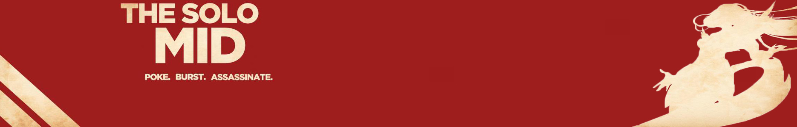
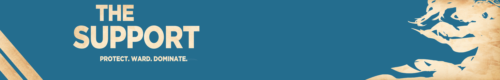

La voie du haut est généralement le refuge des Colosses et autres tanks. Si vous aimez engager les combats, encaisser les dégâts pour vos coéquipiers et être le seul et unique survivant de votre équipe, cette ligne est faite pour vous. La Toplane accueille des champions accessibles et plaisants à jouer, capables d'avoir un impact significatif sur une partie. Comme vous devrez tenir votre voie en solo, il vous faudra cependant rester vigilant et surveiller les abords de votre ligne : la rivière et son petit buisson représentent une source de danger qu'il vous faudra systématiquement guetter. Mais attention également au buissons à trois branches qui, si vous êtes côté bleu peuvent être une voie d'accès furtive pour le Jungler ennemi, ou si vous êtes côté rouge, une manière pour ce même Jungler de vous surprendre dans votre dos. Depuis plusieurs patches, la méta demande aux Toplaners d'être très mobiles, notamment grâce au sort d'Invocateur Téléportation. Combiné à un Saut Eclair, ces deux sorts seront donc vos fidèles compagnons sur cette voie. Le Toplaner, de par sa solitude, se doit de farmer des sbires le plus rapidement possible, tout en empêchant son rival d’en faire de même. Le but est de prendre le dessus sur son vis-à-vis : plus vite vous le dominez, plus vite vous pouvez décaler sur les autres voies afin d'aider vos coéquipiers en potentielle difficulté … ou appuyer leur domination sur le reste de l'équipe adverse.
Pour vous lancer sur la voie du haut, n'hésitez pas à privilégier des champions comme Garen, qui possède l'avantage de ne pas avoir de Mana (ainsi qu'une faculté naturelle à se cacher dans les buissons, n'en déplaise à certains), Shen, qui n'utilise pas de Mana non plus mais de l'Energie, vitale à tout Ninja digne de ce nom, ou encore Maokai, extrêmement résistant et très utile à son équipe lors des combats.

Cela peut paraître évident mais la voie du milieu joue un rôle… central. C'est l'endroit sur lequel tous les regards sont rivés et sur lequel reposent beaucoup d'enjeux d'une partie. Un bon Midlaner connaît les forces et les faiblesses de son champion, celles de son adversaire et les possibilités qu'il a pour prendre le dessus. C'est une voie dangereuse car elle est très exposée, rendant les Midlaners vulnérables aux ganks et aux escarmouches. Bien plus qu'un Toplaner, la midlane exige du joueur d'être d'une vigilance extrême, de poser des balises de vision de chaque côté de la rivière et de savoir en permanence où se situe le Jungler ennemi. Les Midlaners jouent des champions très puissants, la plupart du temps des Mages et des Assassins, qui font une quantité de dégâts colossaux mais qui sont très fragiles si jamais ils se font attraper par leurs adversaires. La position centrale de la voie du milieu doit aussi pousser les Midlaners à pouvoir se rendre rapidement sur les autres voies, afin de faire peser le poids de la supériorité numérique lors d'une escarmouche. En combats d'équipe, les Midlaners devront apprendre l'art d'un positionnement efficace : à bonne distance des tanks ennemis, qui ne manqueront pas de leur foncer dessus, mais assez près pour pouvoir mettre tous les dégâts possibles et nécessaires.
Pour vos débuts sur la voie du milieu, privilégiez des champions qui peuvent farmer de loin et/ou s'échapper facilement (l'avantage de la Midlane est que sa longueur est réduite par rapports aux autres), comme Ziggs, Morgana, ou Lux.
 La Jungle est probablement l'endroit le moins accueillant et le poste le plus intimidant au sein de la League. Mais la gloire qu'elle peut vous apporter est proportionnellement inverse, et les Junglers les plus talentueux sont unanimement salués. Dans la Jungle, votre rôle est d'aider vos acolytes sur les voies à faire pencher la balance en votre faveur. Il faut donc combiner un bon sens du timing, une bonne vision du jeu et surtout, apprendre à valser entre les camps de monstres neutres pour pouvoir amasser rapidement des Pièces d'Or. Un bon Jungler doit avoir les yeux partout sur la carte, savoir où est son homologue et agir en conséquence. Il vient en renfort d'un gank de l'équipe adverse, donne le pouvoir de la sentinelle bleue à son midlaner dès qu'il le peut, et rapporte des informations sur les positions de l'équipe ennemie à ses coéquipiers. Les types de Junglers sont très divers : on peut trouver des Assassins, des Tanks, et même depuis quelques semaines, des Tireurs. Si vous débutez dans la Jungle, consultez notre article pour bien commencer et privilégiez des champions résistants pour ne pas vous faire tuer par les monstres neutres, ainsi que des champions, permettant d'aller au combat rapidement.
La Jungle est probablement l'endroit le moins accueillant et le poste le plus intimidant au sein de la League. Mais la gloire qu'elle peut vous apporter est proportionnellement inverse, et les Junglers les plus talentueux sont unanimement salués. Dans la Jungle, votre rôle est d'aider vos acolytes sur les voies à faire pencher la balance en votre faveur. Il faut donc combiner un bon sens du timing, une bonne vision du jeu et surtout, apprendre à valser entre les camps de monstres neutres pour pouvoir amasser rapidement des Pièces d'Or. Un bon Jungler doit avoir les yeux partout sur la carte, savoir où est son homologue et agir en conséquence. Il vient en renfort d'un gank de l'équipe adverse, donne le pouvoir de la sentinelle bleue à son midlaner dès qu'il le peut, et rapporte des informations sur les positions de l'équipe ennemie à ses coéquipiers. Les types de Junglers sont très divers : on peut trouver des Assassins, des Tanks, et même depuis quelques semaines, des Tireurs. Si vous débutez dans la Jungle, consultez notre article pour bien commencer et privilégiez des champions résistants pour ne pas vous faire tuer par les monstres neutres, ainsi que des champions, permettant d'aller au combat rapidement.

Si les autres voies vous paraissent trop difficiles à appréhender et que vous privilégiez un fonctionnement par binôme, dirigez-vous vers la voie du bas. Si l'union fait souvent la force, le contraire peut mener au désastre. La voie du bas exige donc du Carry AD ainsi que du Support une bonne compréhension de l'autre ainsi que le respect du rôle de chacun. Le Carry AD est souvent le poste - avec le Midlaner que nous citions plus haut, sur lequel repose beaucoup de choses lors d'une partie. Alors que le Midlaner va faire des dégâts magiques, le Carry AD va faire pour sa part des dégâts physiques, l'intérêt étant de varier les types de dégâts afin que l'ennemi ne puisse pas avoir assez de résistance de chaque type. Le rôle du Carry AD en début de partie est de farmer, farmer, et encore farmer. Le farm est une des clés de la réussite en tant que Carry AD. Il va vous permettre d'avoir des Pièces d'Or, d'acheter des objets et d'avoir les dégâts suffisants pour pouvoir tuer n'importe quel champion ennemi (hormis les plus gros tanks). Plus tard dans la partie, il devra lui aussi se positionner de manière optimale. Aussi vulnérable que le Midlaner, le Carry AD doit être à la fois en sécurité et assez près du combat pour être efficace, faute de quoi son équipe manquera cruellement de dégâts.
Pour commencer dans le rôle de Carry AD, orientez-vous comme pour la Midlane sur des champions avec une bonne portée d'attaque, et un sort permettant de vous échapper. Caitlyn est un excellent champion pour débuter en tant que Carry AD : elle possède la plus grande portée du jeu. Ezreal est un excellent personnage également : son E, Transfert Arcanique, lui permet d'échapper à beaucoup de situations périlleuses. Malgré son manque de possibilité de fuir, Jinx représente un bon choix pour les aspirants Carry AD, car elle possède des sorts avec beaucoup de portée, fait beaucoup de dégâts, et son E, Pyromâcheurs, permet de calmer les ardeurs des ennemis qui voudraient lui foncer dessus… ou de piéger ceux qui fuient.

Fidèle compagnon et bras droit du Carry AD, le Support n'en est pas moins un rôle vital, même une fois sorti de la voie du bas. Porté sur des sorts, des compétences et un comportement utilitaires, le Support porte très bien son nom. Il est le soutien principal de son Carry AD : il l'aide à bien farmer, le protège en cas d'attaque, et lui prête main forte s'il souhaite agresser l'ennemi. Les champions joués en tant que Supports sont souvent résistants naturellement (comme le Support ne farme pas beaucoup, il ne peut pas acheter d'objets aussi vite que son équipier), et possèdent beaucoup de contrôles de foule, ainsi que, la plupart du temps, une compétence de protection pour le Carry AD.
Braum, Thresh ou Alistar sont d'excellents champions pour débuter dans ce rôle. Ce trio, pour qui l'intérêt ne désemplit pas au fil des métas, est un incontournable pour chaque joueur de Support.
Kleimak | Tous droits réservés